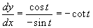
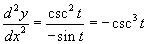
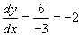

This device cannot display Java animations. The above is a substitute static image
1. A circle
The applet initially shows a graph of a circle defined parametrically (if the circle looks squished, click Equalize Axes). In this case, x(t) = cos(t) and y(t) = sin(t). Move the t slider, which changes the value of the t parameter. Changing t changes the values of x(t) and y(t), which are the coordinates of a point on the curve (the magenta dot). As you change t, the dot traces out the curve. The limit control panel now has some additional fields on it to specify the minimum and maximum values of t used in drawing the curve (tmin and tmax), plus 'tintervals' - the number of intervals into which this is divided. Making this smaller results in a coarser graph.
The graph also displays the value of dy/dx, which is just the slope of the tangent line at the point corresponding to the current value of t. This is computed using the formula above as:

The graph also shows the value of the second derivative, computed using the formula above as

2. Another circle
Select the second example from the drop down menu. This is also a circle, with the definition
x(
t) = cos(2
t) and
y(
t) = sin(2
t)
Move the
t slider and notice what happens. What difference does that multiple of 2 inside the sine and cosine functions make? How does the graph change? How does the position of the point vary with
t? How will the derivatives change? Parametric curves can retrace themselves, unlike curves defined using
y =
f (
x).
3. A line
Select the third example from the drop down menu. This shows a straight line. Only part of the line is showing, due to setting tmin = 0 and tmax = 1. As you would expect, dy/dx is constant, based on using the formulas above:

4. An ellipse
Select the fourth example from the drop down menu. This shows an ellipse, which is just a slight modification of the equations for a circle. Can you compute the derivatives?
5. A Lissajous
Select the fifth example, showing a Lissajous figure. In this case, the multiple of t inside the sine function is different from the one inside the cosine function. Move the t slider and see if you can understand why this curve comes out the way it does.
Explore
You can try your own examples by typing different functions of t for x(t) and y(t) and setting tmin and tmax to appropriate values.
Other 'Applications of Differentiation' topics
(C) 2011 Copyright Math Open Reference.
All rights reserved